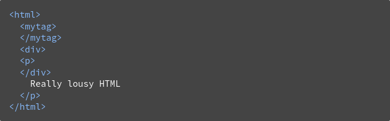

The browsers we will talk about
Open-source browsers
The browser's high level structure

The main flow

WebKit main flow

Mozilla's Gecko rendering engine main flow

The HTML grammar definition
Not a context free grammar
The parsing algorithm

Tokenizing the example input

Tree construction algorithm

Browsers' error tolerance

WebKit error tolerance examples
- </br> instead of <br>
- A stray table
- Nested form elements
- A too deep tag hierarchy
- Misplaced html or body end tags
The render tree relation to the DOM tree

Style computation brings up a few difficulties
- Style data is a very large construct, holding the numerous style properties, this can cause memory problems.
- Finding the matching rules for each element can cause performance issues if it's not optimized.
- Applying the rules involves quite complex cascade rules that define the hierarchy of the rules.
Sharing style data by WebKit
WebKit nodes references style objects (RenderStyle). These objects can be shared by nodes in some conditions.
Applying the rules in the correct cascade order
Style sheet cascade order
According to CSS spec, the cascade order is (from low to high):
- Browser declarations
- User normal declarations
- Author normal declarations
- Author important declarations
- User important declarations
Specificity
Specificity is the means by which browsers decide which CSS property values are the most relevant to an
element and, therefore, will be applied
How is specificity calculated?
The following list of selector types increases by specificity:
- Type selectors (e.g., h1) and pseudo-elements (e.g., ::before).
- Class selectors (e.g., .example), attributes selectors (e.g., [type="radio"]) and pseudo-classes (e.g.,
:hover).
- ID selectors (e.g., #example).
Useful links about specificity
Layout

The stacking order of a block renderer is:
- background color
- background image
- border
- children
- outline
How to avoid re-layout and re-rendering
- Display: none
- Change class instead of attributes
- Lower hierarchy - lighter changes